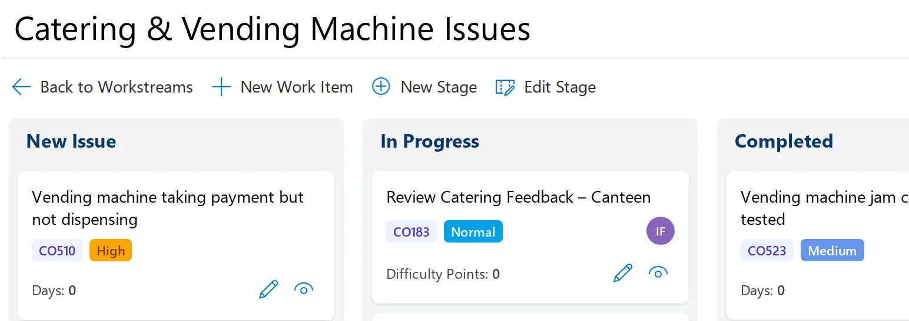
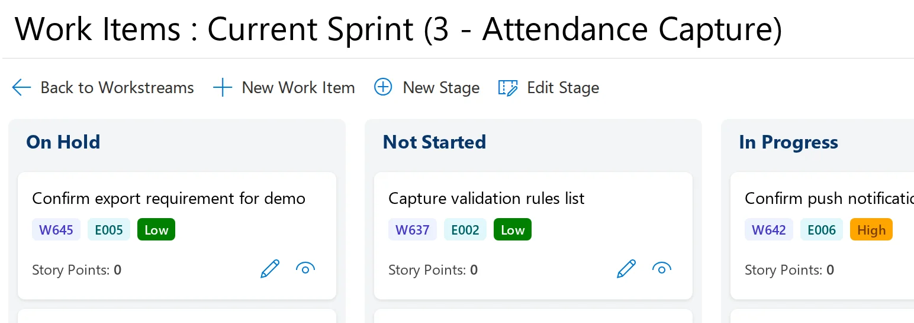
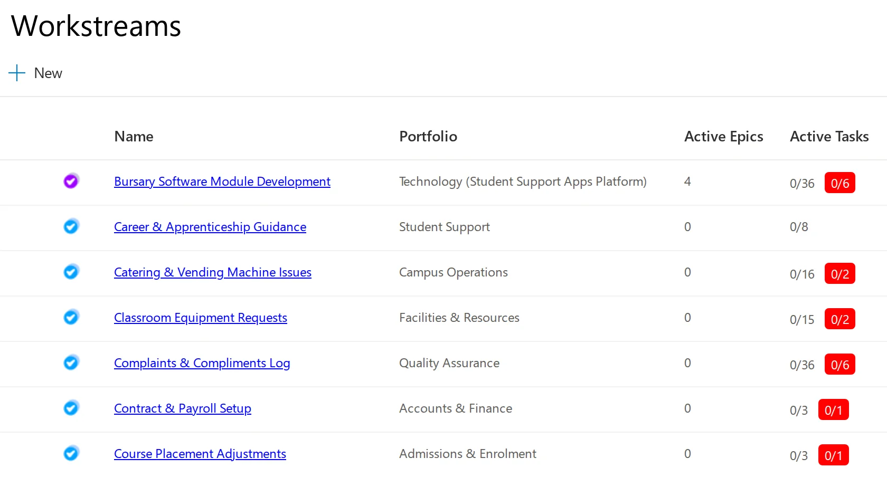
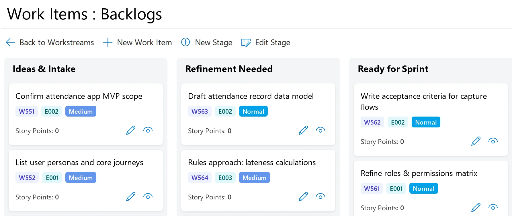

This brochure is a work in progress. The content is not complete and may not be correct.
Kanban boards for everyday work. Sprints for delivery teams.
Group WorkStreams gives each stream of incoming work, such as complaints or HR requests, its own board and stages. In Agile Sprints, Scrum teams plan stories in a prioritised backlog and deliver them in sprints and releases.


An independent promoter of ZedX produced this brochure. ZedX is made by Swiftpro Corporation Ltd. The screens come from the ZedX demo, which uses sample data for a college group.
Group WorkStreams takes everyday work out of spreadsheets
Complaints, catering faults, HR requests and finance queries can each become a workstream, with its own Kanban board, stages and team. Everyone works from one board instead of a spreadsheet, and each item shows who has it and how urgent it is.

It suits operational, administrative and service teams whose work arrives every day, outside any project plan or sprint. It can replace the spreadsheets these teams use to track that work. Teams then rely less on email updates and hand-kept task lists.
Each workstream gets the stages it needs, set with the New Stage and Edit Stage buttons. In the demo, the complaints log has five stages and catering issues have three. Work items carry a reference, a priority and difficulty points. A workstream can also be shown as a simple list or a timeline.
Dashboards show workload, progress and bottlenecks across workstreams, including how many items are critical. Managers don’t have to ask each person for an update. Ask Cloe, the AI assistant built into ZedX, answers questions about the work.
When work needs sprints, a workstream can be linked to Agile Sprints without entering the data twice. A project in Project Portfolios can link its workstreams too, and leaders then follow progress through the project’s structured updates. Education providers can add ZedX Study Planner, an app for students that connects to Group WorkStreams.
Group WorkStreams and Agile Sprints · independent promotional brochure · page 2
Agile Sprints takes Scrum teams from backlog to release
Epics and user stories wait in a prioritised backlog. At sprint planning, the team estimates each story in story points and takes on only what its capacity allows.

Agile Sprints is for teams that deliver software, technology projects and other work in Scrum. Everyone sees the scope and the sprint goal before the sprint begins. A project can hold several Agile boards, one for each team.
During the sprint, a board with stages you can configure shows what is planned, in progress, blocked or finished. Agile Sprints supports daily stand-ups and sprint reviews, and stand-up reporting is automated.
Each epic has an owner, a priority and delivery dates, and a Gantt chart shows how epics overlap. Releases can span several sprints, and each story can be assigned to a planned release version.
Each sprint has a velocity target. At the end, the team reviews completion, velocity and carried-over work, then formally closes the sprint. When Agile Sprints is linked to Project Portfolios, leaders see sprint progress in periodic updates, and the tasks stay with the team.
Group WorkStreams and Agile Sprints · independent promotional brochure · page 3
Which app fits your work?
| Group WorkStreams | Agile Sprints | |
|---|---|---|
| How work arrives | At any time, as requests, cases, issues and routine jobs. | As epics and user stories in a prioritised backlog, planned before each sprint. |
| How it is planned | There is no fixed cycle. Work items move through the workstream’s stages as people handle them. | In timeboxed sprints. The team estimates stories in story points and fills each sprint up to its capacity. |
| How progress is reviewed | On dashboards of workload, progress and bottlenecks across workstreams, including how many items are critical. | In daily stand-ups and sprint reviews, using completion, velocity and carried-over work. |
Leaders follow progress in Project Portfolios
Project managers send a structured update at agreed intervals, such as monthly or quarterly, and reminders go out when one is due. Each update rates delivery confidence red, amber or green and adds a progress note, achievements, blockers, risks, dependencies and any support needed. Dashboards show delivery health across portfolios, programmes and projects. When a project links to either app, Project Portfolios gets a summary of its progress in each update, and the tasks stay on the team’s board.
Editions, sign-in and hosting
- Editions
- Professional and Group (per user, ideally 1 to 50 users) currently include both apps and Cloe AI, and Home includes Group WorkStreams. Corporate, Enterprise and Enterprise Plus offer every ZedX app. Ask Swiftpro for prices.
- Hosting
- ZedX hosts Home, Professional, Group and Corporate. Enterprise and Enterprise Plus have unlimited users and can run in your own Azure subscription or other agreed infrastructure.
- Sign-in and access
- Single sign-on with Microsoft Entra ID. Role-based permissions follow your organisation’s structure, and authorised users can see across departments.
- Try it yourself
- Anyone can open the demo at demo.zedx.net without registering. Swiftpro also lists a free trial from November 2026, with no credit card needed.
Use the contact form at zedxapps.com. Your request goes to Swiftpro, the company that makes ZedX, and they’ll get back to you. Customers log in at zedx.net.
Independent promotional brochure, November 2026, work in progress. ZedX, ZedX Apps, Group WorkStreams, Agile Sprints, Project Portfolios and the other ZedX names here are products of Swiftpro Corporation Ltd, London. Product details come from zedxapps.com and the screens from the ZedX demo. Website: hamzaanjum96.github.io/ZedX